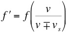
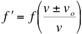
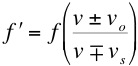
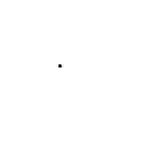
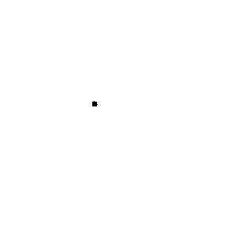
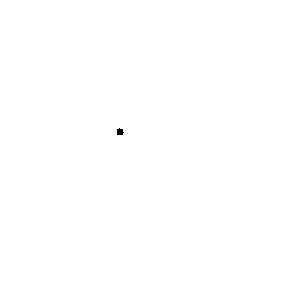

"Physics is becoming so unbelievable
complex that it is taking longer and longer to train a
physicist. It is taking so long, in fact, to train a
physicist to the place where he understands the nature of
physical problems that he is already too old to solve them."
Eugene Wigner
The change in pitch of the sound emitted by a moving vehicle
as it passes you is known as the Doppler Effect, named for the Austrian physicist
and mathematician Christian
Doppler . We are most familiar
with this effect for sound waves, but it is equally applicable
to all types of waves.
There are two distinct situations we can consider,
Source Moving, Observer at Rest:
In this case, the motion of the
source "squashes" (or "stretches") the waves when the source is
moving towards (or away from) the observer, leading to a shorter
(longer) effective wavelength, which in turn leads to a higher
(lower) observed frequency,

where v is the speed of the wave
and vs is the speed of the source.
Observer Moving, Source at
Rest:
In this case, the motion of the
observer towards (away from) the source causes more (fewer)
waves to be observed per second, thus leading to an increase
(decrease) in the observed frequency,

where vo is the
speed of the observer.
If both the source and observer are moving these two
equations can be combined, giving,

The animations below illustrate sound waves
leaving a point source when the source
is (a) at rest, (b) moving to the right with a
speed 70% that of sound (Mach 0.7), (c) moving
at the speed of sound (Mach 1.0) and (d) moving at
Mach 1.4. The cone shaped shockwave which
leads to a sonic
boom
is clearly visible in (d)

Animations courtesy of Dr.
Dan Russell, Pennsylvania State University
Q: What is a
tachyon ?
A: A sub-atomic particle devoid of good taste


 
